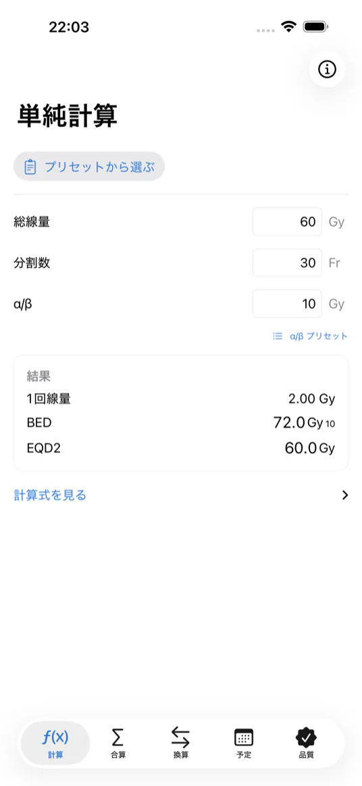
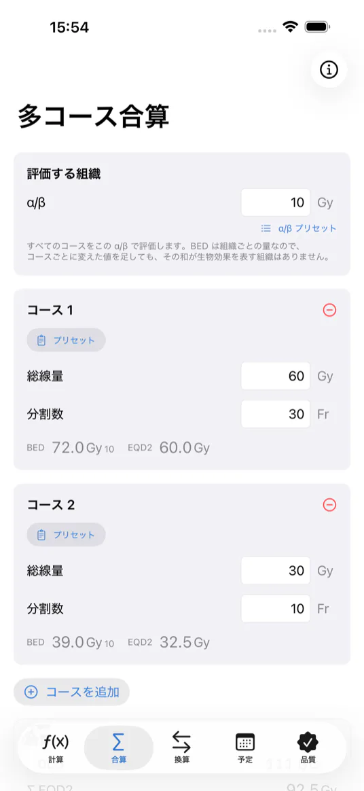
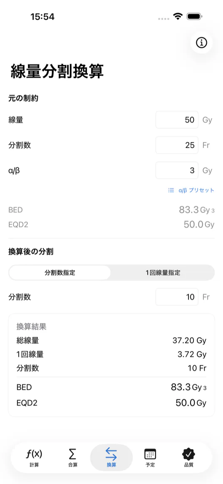
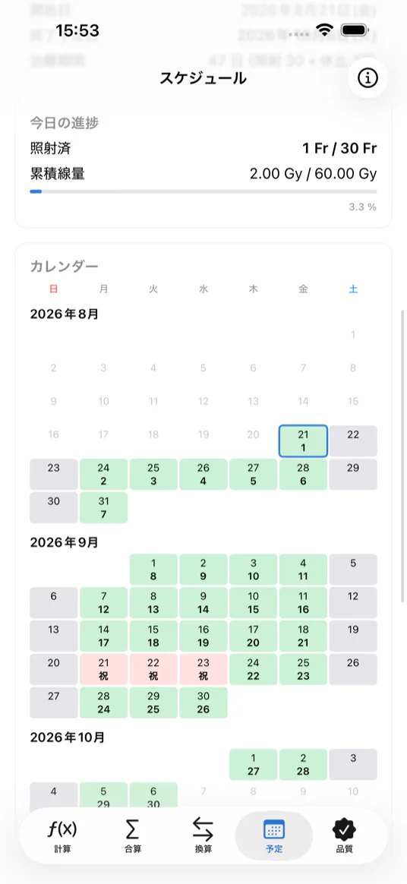
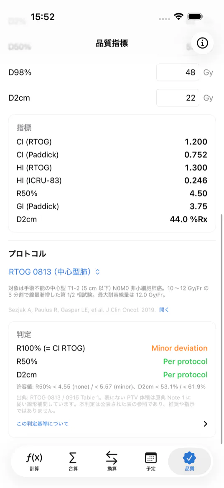
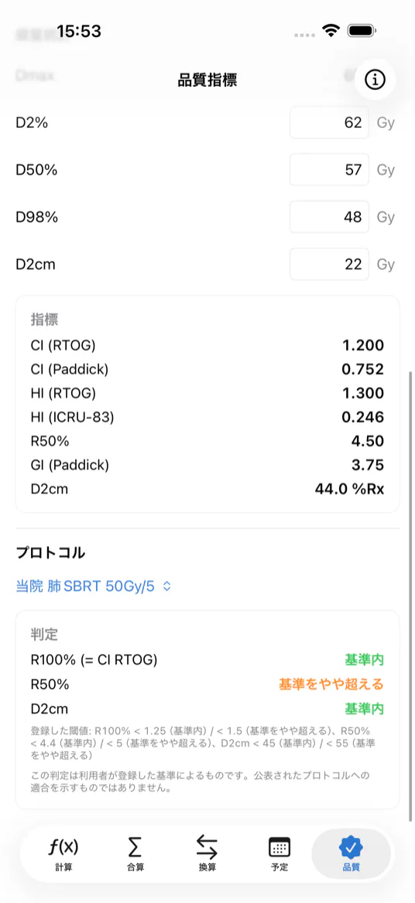

RADIATION ONCOLOGY · iOS
線量の計算と、
その根拠を、手元に。
Dose calculations,
and the evidence,
at hand.
生物学的等価線量の計算、複数コースの合算、治療日程、プラン品質指標の逸脱判定。放射線治療に従事する医師・医学物理士・診療放射線技師のための計算ツールです。
Biologically equivalent dose, cumulative dose across courses, treatment scheduling, and deviation assessment for plan quality metrics. A calculation tool for radiation oncologists, medical physicists, and radiation therapists.
通信を一切行いません。入力した内容も計算結果も、端末の外に出ることはありません。
It performs no network communication. Neither what you enter nor what it computes ever leaves the device.
The app’s interface is in Japanese only, and it is not localized into English. Every screenshot on this page shows the Japanese interface.

できること
Features
5 つのタブ Five tabs- BED・EQD2
- BED and EQD2
- 線量と分割回数から生物学的等価線量を求めます。α/β 比は組織ごとに変更でき、プリセットからも選べます。
- Computes biologically equivalent dose from total dose and number of fractions. The α/β ratio can be set per tissue, or chosen from presets.
- 複数コースの合算
- Cumulative dose across courses
- 複数のコースの BED と EQD2 を合算します。評価する組織の α/β を 1 つ選び、すべてのコースをその α/β で評価します。単純加算であり回復係数を考慮しないため、再照射計画には用いないでください。
- Sums BED and EQD2 over several courses. You select a single α/β for the tissue under evaluation, and every course is evaluated at that α/β. This is a plain sum that applies no recovery factor, so do not use it for re-irradiation planning.
- 分割変更の換算
- Fractionation conversion
- 分割回数または 1 回線量を指定して、別の線量分割に置き換えたときの線量を求めます。
- Specify either the number of fractions or the dose per fraction, and obtain the dose that an alternative fractionation would require.
- 治療日程
- Treatment schedule
- 開始日と分割回数から終了予定日を求めます。日本の祝日、週末、個別の休止日を反映したカレンダーを表示します。
- Derives the expected completion date from the start date and the number of fractions, and shows a calendar that accounts for Japanese public holidays, weekends, and individually entered days off.
- 品質指標の判定
- Plan quality assessment
- 肺 SBRT では R100%・R50%・D2cm を PTV 体積に応じて、頭部定位照射では均一性指数と適合性指数を判定します。自施設で用いている基準を登録して判定することもできます。
- For lung SBRT, R100%, R50% and D2cm are assessed against PTV volume; for intracranial stereotactic irradiation, the homogeneity index and the conformity index are assessed. Constraints used at your own institution can be registered and assessed as well.
画面
Screens
iPhone 17 Pro Max iPhone 17 Pro Max · Japanese interface


判定と、その根拠を
同じ画面に
The assessment and
its basis, on one screen
判定が出るときは、必ず出典と許容値も同じ画面に表示します。何を根拠にした判定なのかを、画面を離れずに確かめられます。
Whenever an assessment appears, the source and the tolerance values appear with it. You can confirm what the assessment rests on without leaving the screen.
自施設の基準を選んでいる間は、段階名を「基準内 / 基準をやや超える」に変え、公表されたプロトコルへの適合を示すものではないことを常時表示します。
While institutional constraints are selected, the category names change to “Within constraint” and “Slightly above constraint”, and a note stating that the result does not indicate compliance with any published protocol stays on screen.


本アプリは放射線治療の専門知識を持つ医療従事者を対象とした計算補助ツールです。医療機器ではなく、診断や治療方針の決定を行うものではありません。計算結果および判定は、必ず利用者ご自身の専門的判断により検証してください。
PocketRT is a calculation aid intended for healthcare professionals with specialist knowledge of radiation therapy. It is not a medical device, and it does not make diagnostic or treatment decisions. Every result and every assessment must be verified by the user’s own professional judgment.